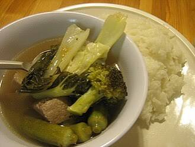
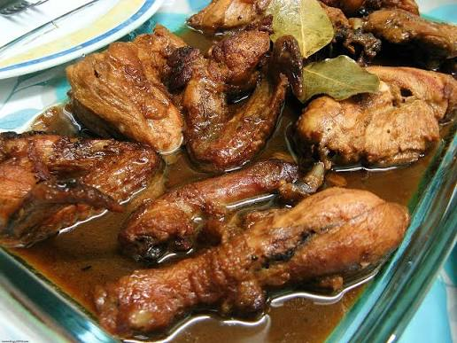
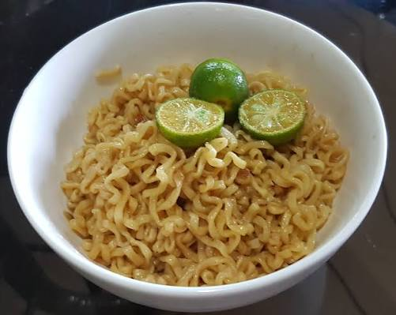

Filipino Comfort Food
These classic Filipino dishes are the heart of Tarlac’s everyday meals – warm, familiar, and made with love. Found in every carinderia, home kitchen, and restaurant across the province, they’re the foods that bring comfort to locals and visitors alike, especially after a long day of exploring Tarlac’s attractions.
Featured Comfort Dishes
-

Pork Sinigang -

Chicken Adobo -

Pancit Canton
About These Beloved Dishes
- Pork Sinigang: A sour soup that’s a staple in Tarlac homes – made with pork ribs, tamarind (or local calamansi for extra tang), and fresh vegetables like kangkong, radish, and eggplant from nearby farms. Many families add their own secret touch, like a splash of pineapple juice or a handful of wild tamarind leaves.
- Chicken Adobo: The national dish of the Philippines, and a favorite in Tarlac. Chicken pieces are marinated and simmered in soy sauce, vinegar, garlic, and bay leaves – Tarlac’s version often uses locally brewed soy sauce and is served with a side of fried tofu or boiled eggs.
- Pancit Canton: Stir-fried noodles with pork, shrimp, vegetables, and a savory sauce. In Tarlac, it’s commonly served at birthdays (to symbolize long life) and family gatherings – many carinderias make their own noodles using local wheat flour.
- Caldereta: A hearty meat stew made with beef or goat, tomatoes, potatoes, carrots, and liver spread. Tarlac’s take includes locally grown bell peppers and a dash of fish sauce for extra flavor – perfect for cool evenings in the province’s upland areas.
Where to Find These Dishes
- Carinderia Row (Tarlac City Public Market): Every stall serves their own version of sinigang and adobo – prices are affordable, and the food is cooked fresh daily.
- Ate Nena’s Kitchen (Capas): Known for their home-style pancit canton and caldereta – locals often stop here after visiting Mount Pinatubo.
- Neighborhood Sari-Sari Stores: Many small stores with attached eateries serve simple comfort meals for breakfast, lunch, and dinner – great for experiencing everyday Tarlac life.
- Family Restaurants (All Towns): Places like “Tarlac Home Kitchen” serve classic comfort food with generous portions, perfect for groups.
Why These Dishes Matter to Tarlac Locals
- Everyday Nourishment: These dishes are quick to prepare and packed with flavor, making them ideal for busy families and workers in Tarlac’s agricultural and industrial areas.
- Memories & Tradition: Most locals associate these foods with childhood – adobo from their grandmother’s kitchen, sinigang on rainy days, and pancit at birthday parties.
- Welcoming Guests: When visitors come to Tarlac homes, comfort food is often served to make them feel like part of the family.